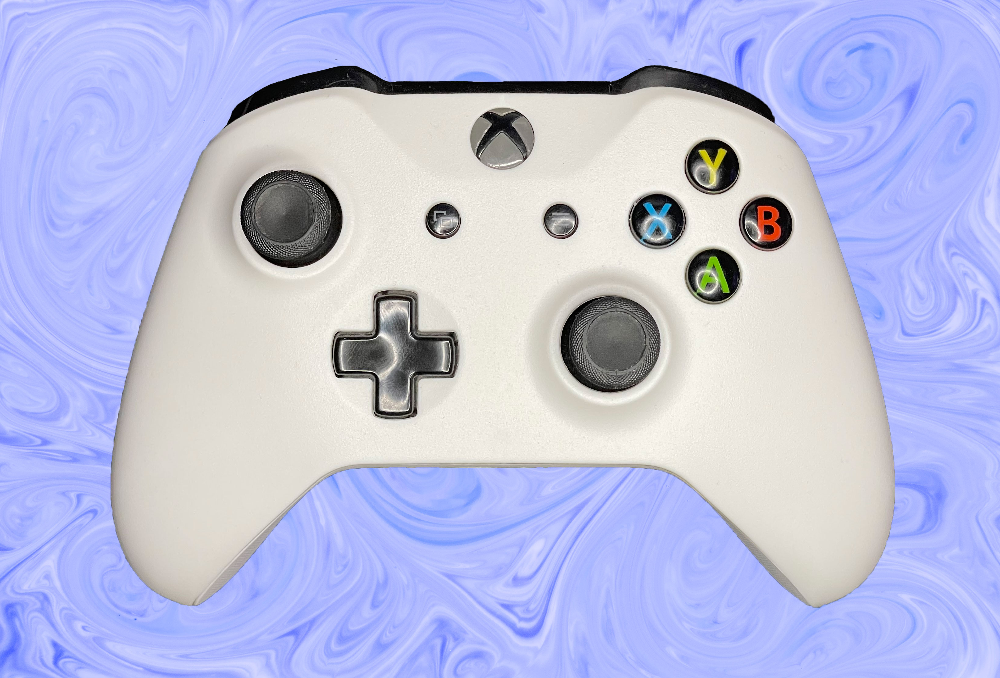

Joystick Xbox One Restaurado

El joystick lo compré en el 2014 y este año lo restauré por completo. Tenía bastante Drift en los analogicos, la goma estaba bastante gastada y la carcasa que sostenía todo el joystick, estaba quebrada.
Por lo tanto, aproveché para comprarle una carcasa por AliExpress y también para comprarle unos analógicos. Al final me di cuenta que tuve que hacer otras modificaciones para adaptar la carcasa (Comprando un joystick usado más moderno), ya que la carcasa que le compre era de un modelo más nuevo. En conclusión, lo que se conserva del antiguo joystick es la placa y el logo, lo que lo hace un joystick muy especial.